Kundereskontro er et detaljert register som viser alle økonomiske transaksjoner mellom bedriften og hver enkelt kunde. Dette er en underreskontro til hovedboken som gir en komplett oversikt over kundefordringer og betalingshistorikk for hver kunde individuelt.
I motsetning til ansattreskontro som håndterer ansattes økonomiske forhold, fokuserer kundereskontro på å spore alle salgs- og betalingstransaksjoner med kunder.
For en generell oversikt over reskontro, se Hva er Reskontro?.
Hva inneholder en kundereskontro?
En kundereskontro fungerer som en individuell konto for hver kunde og inneholder detaljert informasjon om alle økonomiske forhold mellom bedriften og kunden.
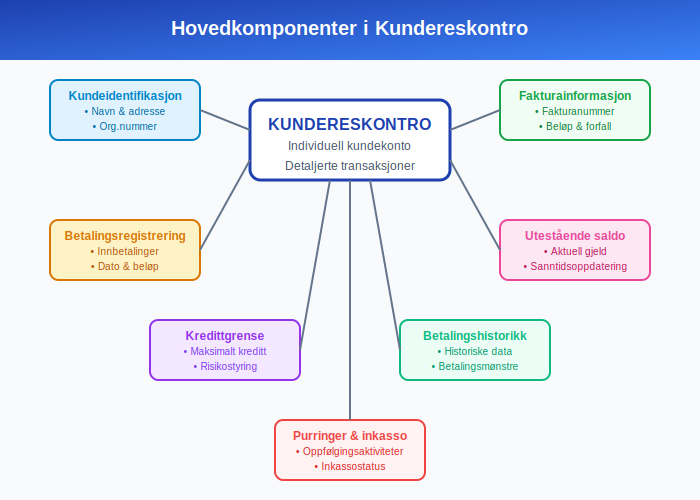
Hovedkomponenter i kundereskontro:
- Kundeidentifikasjon: Navn, adresse, organisasjonsnummer og kontaktinformasjon
- Fakturainformasjon: Alle utstedte fakturaer med beløp og forfallsdatoer
- Betalingsregistrering: Innbetalinger med dato og beløp
- Utestående saldo: Aktuell gjeld kunden har til bedriften
- Kredittgrense: Maksimalt kredittbeløp for kunden
- Betalingshistorikk: Historisk oversikt over betalingsmønstre
- Purringer og inkasso: Registrering av oppfølgingsaktiviteter
Forskjellen mellom Kundereskontro og Hovedbok
Mange forveksler kundereskontro med hovedbokføring, men det er viktige forskjeller mellom disse systemene.
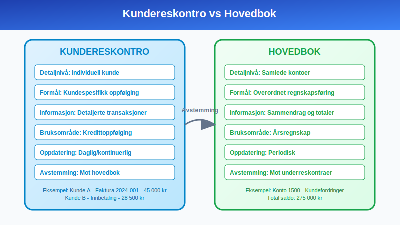
Hovedforskjeller:
| Aspekt | Kundereskontro | Hovedbok |
|---|---|---|
| Detaljnivå | Individuell kunde | Samlede kontoer |
| Formål | Kundespesifikk oppfølging | Overordnet regnskapsføring |
| Informasjon | Detaljerte transaksjoner | Sammendrag og totaler |
| Bruksområde | Kredittoppfølging, fakturering | Årsregnskap, rapportering |
| Oppdateringsfrekvens | Daglig/kontinuerlig | Periodisk |
| Avstemming | Mot hovedbok | Mot underreskontraer |
Kundereskontro i praksis
Kundereskontro oppdateres kontinuerlig når transaksjoner med kunder finner sted og danner grunnlaget for effektiv debitoroppfølging.
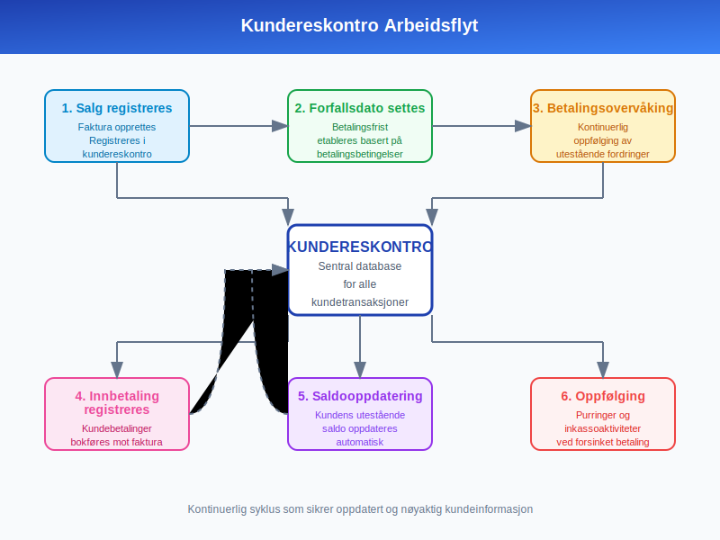
Typisk arbeidsflyt:
- Salg registreres: Faktura opprettes og registreres i kundereskontro
- Forfallsdato settes: Betalingsfrist etableres basert på betalingsbetingelser
- Betalingsovervåking: Kontinuerlig oppfølging av utestående fordringer
- Innbetaling registreres: Kundebetalinger bokføres mot riktig faktura
- Saldooppdatering: Kundens utestående saldo oppdateres automatisk
- Oppfølging: Purringer og inkassoaktiviteter ved forsinket betaling
Praktisk eksempel på kundereskontro
Her er et detaljert eksempel på hvordan en kundereskontro kan se ut for en kunde over en tremånedersperiode:
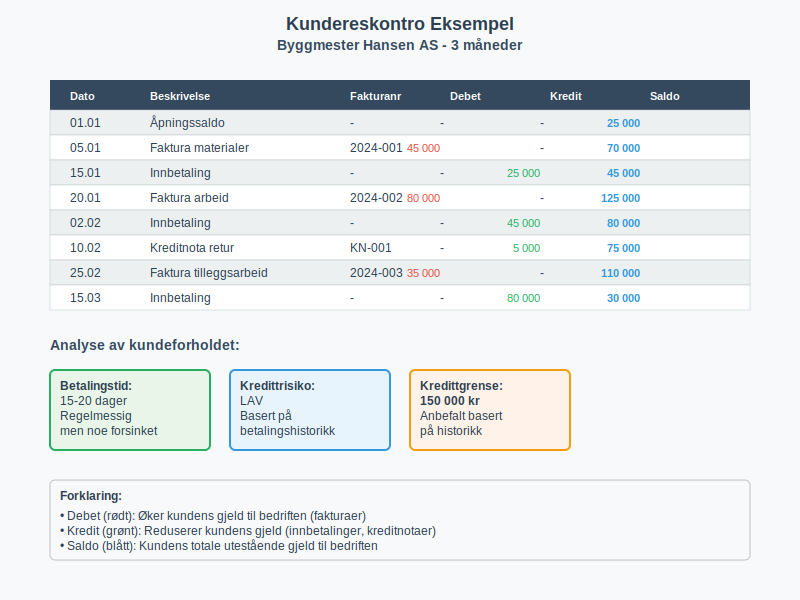
Kunde: Byggmester Hansen AS
| Dato | Beskrivelse | Fakturanr | Debet | Kredit | Saldo |
|---|---|---|---|---|---|
| 01.01 | Åpningssaldo | - | - | - | 25 000 |
| 05.01 | Faktura materialer | 2024-001 | 45 000 | - | 70 000 |
| 15.01 | Innbetaling | - | - | 25 000 | 45 000 |
| 20.01 | Faktura arbeid | 2024-002 | 80 000 | - | 125 000 |
| 02.02 | Innbetaling | - | - | 45 000 | 80 000 |
| 10.02 | Kreditnota retur | KN-001 | - | 5 000 | 75 000 |
| 25.02 | Faktura tilleggsarbeid | 2024-003 | 35 000 | - | 110 000 |
| 15.03 | Innbetaling | - | - | 80 000 | 30 000 |
Analyse av kundeforholdet:
- Gjennomsnittlig betalingstid: 15-20 dager
- Betalingsmønster: Regelmessig, men noe forsinket
- Kredittrisiko: Lav basert på betalingshistorikk
- Anbefalt kredittgrense: 150 000 kr
Typer kundereskontro-systemer
Moderne bedrifter kan velge mellom ulike tilnærminger til kundereskontro avhengig av størrelse og kompleksitet.
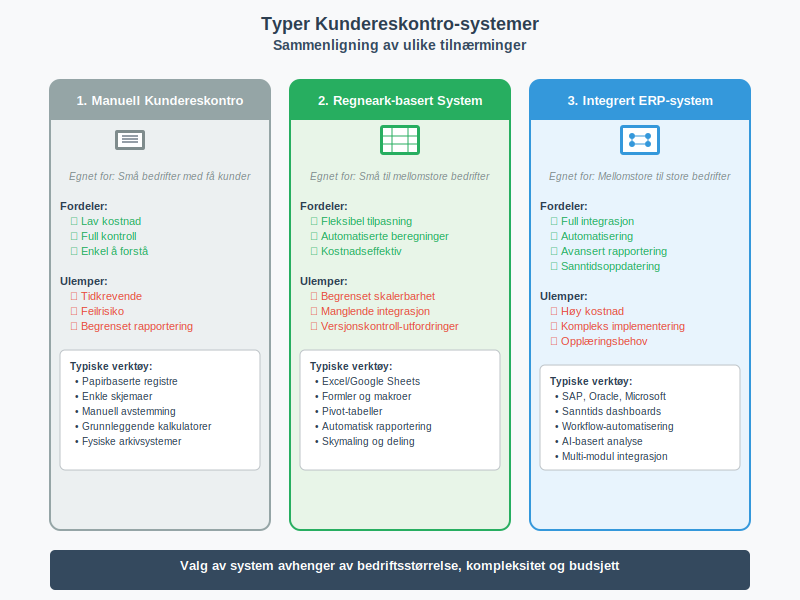
1. Manuell kundereskontro
Egnet for: Små bedrifter med få kunder
Fordeler:
- Lav kostnad
- Full kontroll
- Enkel å forstå
Ulemper:
- Tidkrevende
- Feilrisiko
- Begrenset rapportering
2. Regneark-basert system
Egnet for: Små til mellomstore bedrifter
Fordeler:
- Fleksibel tilpasning
- Automatiserte beregninger
- Kostnadseffektiv
Ulemper:
- Begrenset skalerbarhet
- Manglende integrasjon
- Versjonskontroll-utfordringer
3. Integrert ERP-system
Egnet for: Mellomstore til store bedrifter
Fordeler:
- Full integrasjon
- Automatisering
- Avansert rapportering
- Sanntidsoppdatering
Ulemper:
- Høy kostnad
- Kompleks implementering
- Opplæringsbehov
Regnskapsføring og kundereskontro
Kundereskontro må stemme overens med hovedbokens kundefordringskonto for å sikre korrekt regnskapsføring.
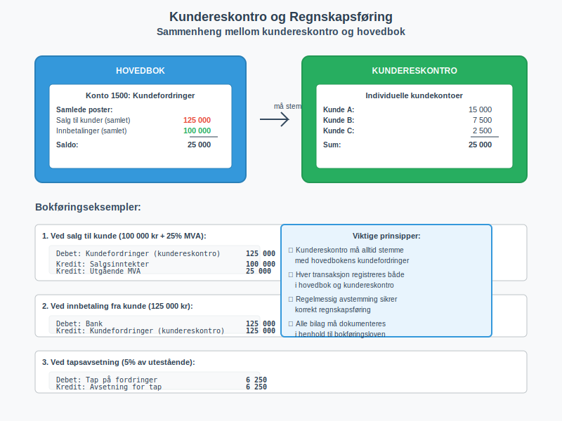
Bokføringseksempler:
Ved salg til kunde (100 000 kr + 25% MVA):
Debet: Kundefordringer (kundereskontro) 125 000
Kredit: Salgsinntekter 100 000
Kredit: Utgående MVA 25 000
Ved innbetaling fra kunde (125 000 kr):
Debet: Bank 125 000
Kredit: Kundefordringer (kundereskontro) 125 000
Ved tapsavsetning (5% av utestående):
Debet: Tap på fordringer 6 250
Kredit: Avsetning for tap 6 250
Aldersanalyse av kundefordringer
En av de viktigste rapportene fra kundereskontro er aldersanalysen som viser hvor lenge fordringer har vært utestående.
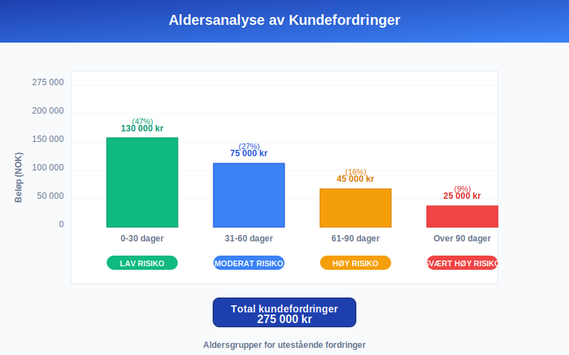
Eksempel på aldersanalyse:
| Kunde | Total | 0-30 dager | 31-60 dager | 61-90 dager | Over 90 dager |
|---|---|---|---|---|---|
| Kunde A | 150 000 | 100 000 | 50 000 | - | - |
| Kunde B | 80 000 | 30 000 | 25 000 | 25 000 | - |
| Kunde C | 45 000 | - | - | 20 000 | 25 000 |
| Totalt | 275 000 | 130 000 | 75 000 | 45 000 | 25 000 |
| Prosent | 100% | 47% | 27% | 16% | 9% |
Risikovurdering basert på alder:
- 0-30 dager: Lav risiko - normal betalingstid
- 31-60 dager: Moderat risiko - send påminnelse
- 61-90 dager: Høy risiko - aktiv oppfølging
- Over 90 dager: Svært høy risiko - vurder inkasso
Kredittoppfølging og kundereskontro
Kundereskontro er grunnlaget for systematisk kredittoppfølging og risikostyring.
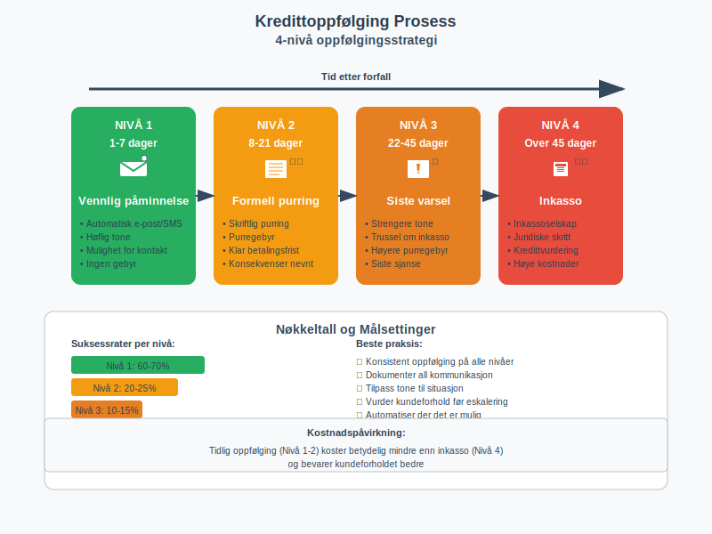
Oppfølgingsstrategi:
Nivå 1: Vennlig påminnelse (1-7 dager etter forfall)
- Automatisk e-post eller SMS
- Høflig tone
- Mulighet for å kontakte ved spørsmål
Nivå 2: Formell purring (8-21 dager etter forfall)
- Skriftlig purring med gebyr
- Klar betalingsfrist
- Konsekvenser ved manglende betaling
Nivå 3: Siste varsel (22-45 dager etter forfall)
- Strengere tone
- Trussel om inkasso
- Høyere purregebyr
Nivå 4: Inkasso (over 45 dager etter forfall)
- Overføring til inkassoselskap
- Juridiske skritt
- Kredittvurdering påvirkes
Juridiske krav til kundereskontro
Norsk lovgivning stiller spesifikke krav til dokumentasjon av kundeforhold og fordringsstyring.
Bokføringsloven og kundereskontro:
- Dokumentasjonsplikt: Alle transaksjoner må dokumenteres med bilag
- Oppbevaringstid: Minimum 5 år etter regnskapsårets slutt
- Sporbarhet: Klar sammenheng mellom bilag og registreringer
- Revisjonsplikt: Kundereskontro må være tilgjengelig for revisjon
Personvernforordningen (GDPR):
- Databehandling: Kun nødvendige kundedata
- Samtykke: Klar hjemmel for databehandling
- Sletting: Rutiner for sletting av utdaterte data
- Sikkerhet: Beskyttelse mot uautorisert tilgang
Automatisering av kundereskontro
Moderne teknologi gjør det mulig å automatisere mange aspekter ved kundereskontro-håndtering.
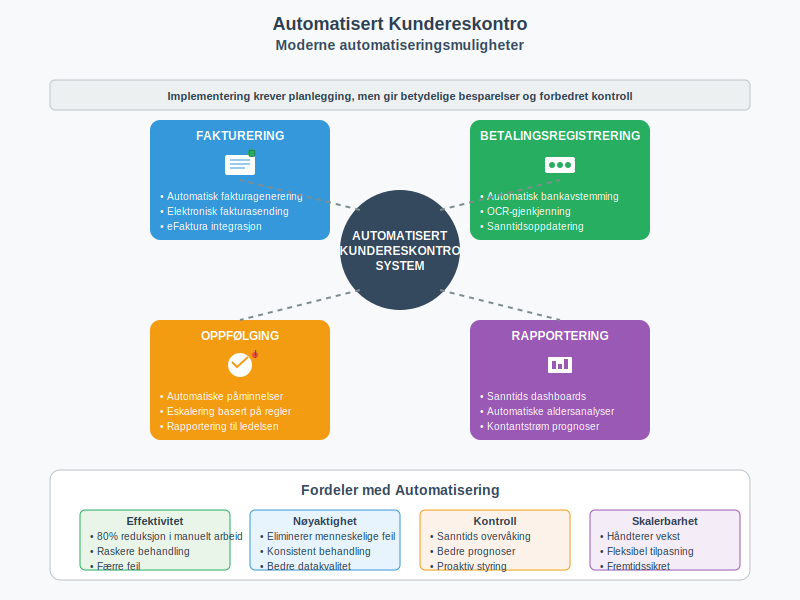
Automatiseringsmuligheter:
Fakturering:
- Automatisk fakturagenerering
- Elektronisk fakturasending
- Integrering med eFaktura
Betalingsregistrering:
- Automatisk bankavstemming
- OCR-gjenkjenning av betalinger
- Sanntidsoppdatering av saldoer
Oppfølging:
- Automatiske påminnelser
- Eskalering basert på regler
- Rapportering til ledelsen
Rapportering:
- Sanntids dashboards
- Automatiske aldersanalyser
- Prognoser for kontantstrøm
Utfordringer med kundereskontro
Selv med moderne systemer kan det oppstå utfordringer knyttet til kundereskontro-håndtering.
Vanlige problemer:
Tekniske utfordringer:
- Systemintegrasjon: Problemer med dataflyt mellom systemer
- Dataqualitet: Feil eller manglende kundeinformasjon
- Backup og sikkerhet: Risiko for datatap
Operasjonelle utfordringer:
- Manuell registrering: Tidkrevende og feilutsatt
- Oppfølgingsrutiner: Inkonsistent håndtering av forfalte fordringer
- Ressursmangel: Utilstrekkelig bemanning for oppfølging
Juridiske utfordringer:
- Personvern: Overholdelse av GDPR-krav
- Inkassoloven: Korrekt håndtering av inkassoprosesser
- Dokumentasjon: Tilstrekkelig dokumentasjon for revisjon
Kundereskontro og kontantstrømstyring
Effektiv kundereskontro-håndtering er avgjørende for bedriftens kontantstrøm og likviditet.
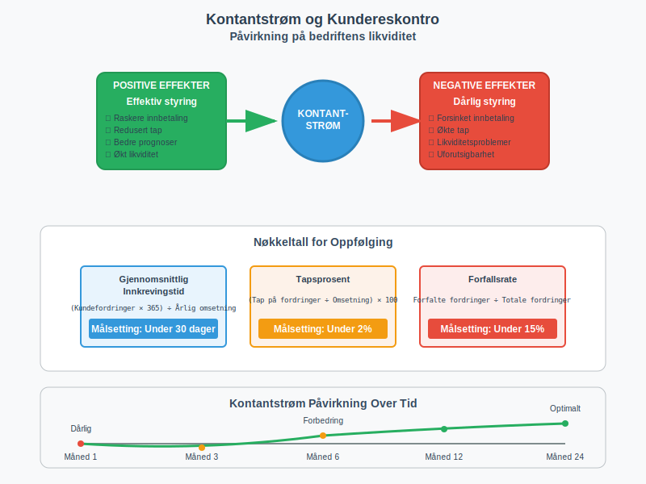
Påvirkning på kontantstrøm:
Positive effekter:
- Raskere innbetaling: Effektiv oppfølging reduserer betalingstid
- Redusert tap: Tidlig identifisering av risikokunder
- Bedre prognoser: Nøyaktige kontantstrømsprognoser
Negative effekter ved dårlig styring:
- Forsinket innbetaling: Manglende oppfølging forlenger betalingstid
- Økte tap: Sent oppdagede betalingsproblemer
- Likviditetsproblemer: Uforutsigbar kontantstrøm
Nøkkeltall for oppfølging:
| Nøkkeltall | Beregning | Målsetting |
|---|---|---|
| Gjennomsnittlig innkrevingstid | (Kundefordringer × 365) ÷ Årlig omsetning | Under 30 dager |
| Tapsprosent | (Tap på fordringer ÷ Omsetning) × 100 | Under 2% |
| Forfallsrate | Forfalte fordringer ÷ Totale fordringer | Under 15% |
Beste praksis for kundereskontro
For å sikre effektiv kundereskontro-håndtering bør bedrifter følge etablerte beste praksis.
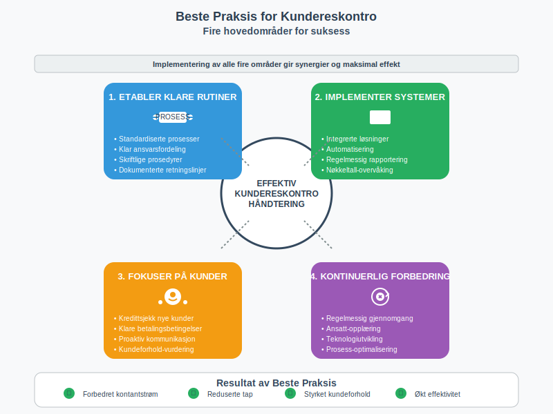
Anbefalinger:
1. Etabler klare rutiner
- Standardiserte prosesser: Konsistent håndtering av alle kunder
- Ansvarsfordeling: Klare roller og ansvar
- Dokumentasjon: Skriftlige prosedyrer og retningslinjer
2. Implementer effektive systemer
- Integrerte løsninger: Sammenheng mellom salg, fakturering og regnskap
- Automatisering: Reduser manuelt arbeid og feilrisiko
- Rapportering: Regelmessig overvåking av nøkkeltall
3. Fokuser på kundeforhold
- Kredittsjekk: Vurder nye kunders kredittverdighet
- Betalingsbetingelser: Klare og rettferdige vilkår
- Kommunikasjon: Proaktiv dialog med kunder
4. Kontinuerlig forbedring
- Regelmessig gjennomgang: Evaluer prosesser og resultater
- Opplæring: Sikre kompetanse hos ansatte
- Teknologiutvikling: Hold deg oppdatert på nye løsninger
Sammenheng med andre regnskapsbegreper
Kundereskontro henger sammen med flere andre viktige regnskapsbegreper som er essensielle for å forstå det totale bildet.
Relaterte begreper:
- Hovedbok: Overordnet regnskapssystem som kundereskontro rapporterer til
- Kundefordringer: Samlede krav bedriften har på kunder
- Debitor: Kunde som skylder penger til bedriften
- Avstemming: Kontroll av at kundereskontro stemmer med hovedbok
- Arbeidskapital: Kundefordringer er en viktig del av arbeidskapitalen
Fremtiden for kundereskontro
Med økende digitalisering og automatisering utvikler kundereskontro-håndtering seg kontinuerlig.
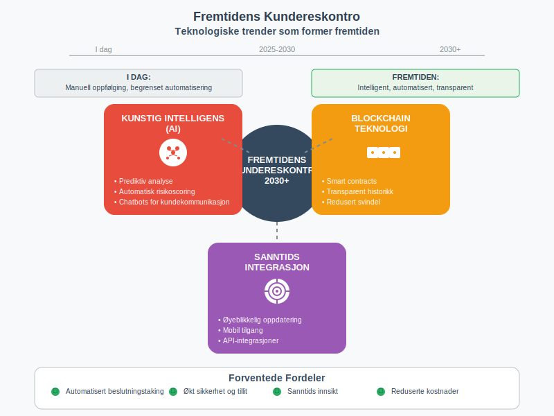
Teknologiske trender:
Kunstig intelligens (AI):
- Prediktiv analyse: Forutsi betalingsatferd
- Automatisk risikoscoring: Vurder kredittverdighet
- Chatbots: Automatisert kundekommunikasjon
Blockchain-teknologi:
- Smart contracts: Automatiske betalingsavtaler
- Transparent historikk: Uforanderlig transaksjonshistorikk
- Redusert svindel: Økt sikkerhet og tillit
Sanntidsintegrasjon:
- Øyeblikkelig oppdatering: Sanntids saldoinformasjon
- Mobil tilgang: Tilgang fra hvor som helst
- API-integrasjoner: Sømløs dataflyt mellom systemer
Konklusjon
Kundereskontro er et fundamentalt verktøy i moderne regnskapsføring som sikrer effektiv håndtering av kundeforhold og fordringsstyring. Ved å implementere gode rutiner og moderne teknologi kan bedrifter:
- Forbedre kontantstrømmen gjennom raskere innkreving
- Redusere tap på fordringer gjennom bedre oppfølging
- Styrke kundeforhold gjennom profesjonell håndtering
- Øke effektiviteten gjennom automatisering av rutineoppgaver
For bedrifter som ønsker å optimalisere sin økonomistyring, er investering i moderne kundereskontro-systemer og -prosesser en kritisk suksessfaktor som direkte påvirker lønnsomhet og vekstmuligheter.